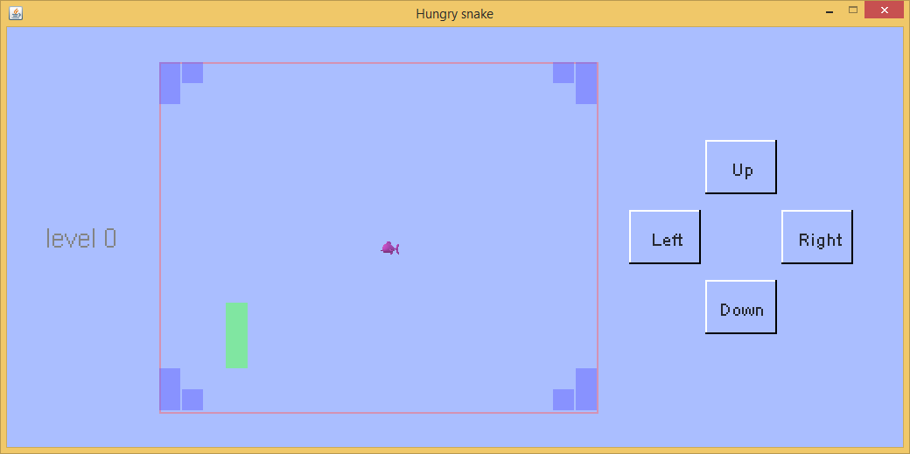

貪吃蛇遊戲首先出現在諾基亞黑白顯示屏手機上。在這個遊戲裏，一條移動的蛇不停地吃食物，每次吃到食物，蛇就會長長一點。當蛇撞到墻或者它自己，這個遊戲就結束了。這個遊戲邏輯很簡單，也沒有什麽復雜的圖像，所以實現起來相對容易。
在此示例中，蛇的身體由綠色方塊組成。食物是粉紅色的魚。墻壁是藍色的塊。當蛇吃魚時，會發出聲音，玩家會獲得一些積分。如果玩家獲得足夠的積分，遊戲將進入下一個級別。當蛇撞到墻壁或自身時，將播放不同的聲音，遊戲結束。
這個遊戲的示例代碼及其輔助文件已壓縮在軟件包中。點擊此處以下載壓縮的遊戲示例包。解壓縮它，然後將game_examples文件夾復制到JMFPLang.jar文件旁邊的scripts文件夾中，如下圖所示。

遊戲的腳本代碼源文件（即hungry_snake.mfps）位於game_examples文件夾的hungry_snake子文件夾中。它的輔助文件（即food.png，eatfood.wav和hitwall.wav）也位於同一文件夾中。要啟動該示例，只需啟動JMFPLang.jar文件，然後在命令行中運行gdi_test::game_test::hungry_snake::run()。由於hungry_snake.mfps的第一條語句告訴MFP解釋器該遊戲的入口函數（如下所示），因此玩家也可以轉至JMFPLang.jar所在的文件夾，然後通過鍵入java -jar JMFPLang.jar -f scripts\game_examples\hungry_snake\hungry_snake.mfps命令在Windows Command / Powershell或Linux bash中運行腳本。用戶甚至可以通過為mfps文件設置默認打開的應用程序來使腳本可自行執行。有關使用@execution_entry標註的詳細信息，只需在MFP命令行中鍵入help @execution_entry即可。
@execution_entry gdi_test::game_test::hungry_snake::run
請註意，由於MFP不支持靜態或全局變量，因此在遊戲中，函數將用於返回一些常量設置值，例如窗口大小，顏色，更新間隔等。下面的代碼就是一個例子。
// width of button
// 按鈕的寬度
function BUTTONWIDTH()
return 80
endf
蛇的活動區域是一個大網格。網格的每個單元都是一個塊。食物總是占據一個塊。蛇的身體和墻由塊組成。蛇每一步向前移動一個塊，直到它撞到墻或它自己或被玩家操縱改變方向。
玩家使用鼠標，手指或按下按鈕控制蛇的移動。由於遊戲需要對按鈕的狀態變化做出反應，因此在if分支中添加了POINTER_DOWN事件處理程序，如下面的代碼片段所示。
variable giEvent = pull_event(DISPLAYSURF)
if giEvent == Null
// no event to handle // 沒有輸入事件
break
elseif get_event_type_name(giEvent) == "GDI_CLOSE"
// quit // 遊戲退出事件
return -1
elseif get_event_type(giEvent) == 106 // mouse or finger slided // 鼠標或手指滑動事件
// x1 and y1 are the coordinate when sliding starts, x2 and y2 are the coordinate when sliding finishes
// x1和y1是滑動開始時的坐標位置，x2和y2是滑動結束時的坐標位置
variable x1 = get_event_info(giEvent, "last_x")
variable y1 = get_event_info(giEvent, "last_y")
variable x2 = get_event_info(giEvent, "x")
variable y2 = get_event_info(giEvent, "y")
... ...
elseif get_event_type_name(giEvent) == "POINTER_DOWN" // mouse or finger tapped down // 鼠標或手指按下事件
... ...
xHit = get_event_info(giEvent, "x")
yHit = get_event_info(giEvent, "y")
... ...
endif
在這個遊戲中，一些繪畫元素，例如蛇和食物總是在移動，而其他繪畫元素，例如墻和按鈕上的文字，則是靜態的。顯然，在每次更新中在屏幕上一個接一個地繪制靜態元素很慢，並且浪費了計算時間。由於這些靜態元素永遠不會覆蓋在移動元素之上，因此，一種更聰明的方法是通過調用open_image_display函數創建背景圖像。此函數返回類似於open_screen_display函數返回的句柄。然後使用與在屏幕上繪圖函數相同的函數在背景圖像中繪制所有靜態元素。繪制完所有靜態元素後，調用函數set_display_bgrnd_image，然後在每次屏幕更新時，整個背景圖像將會被自動繪制在屏幕上。
開發人員可能會註意到，在腳本中，一個叫做scalingRatio的變量應用於與背景圖像有關的大小和位置的所有計算。這是因為，為了加速屏幕更新，背景圖像的大小與屏幕不同。較小的背景圖像尺寸意味著較快地繪制背景圖案，但是屏幕上顯示的圖像質量會更差。因此縮放比例默認設置為0.5，這意味著背景圖像僅是實際屏幕尺寸的一半。
以下代碼展示了如何使用背景圖像。
// open an empty image display // 打開一個空的圖像顯示窗口（image display） variable boardImageDisplay = open_image_display(null) ... ...// draw static elements, e.g. walls, here //在這裏繪制靜態元素，比如墻。 // get snapshot of the image display, note that we update the image display before taking snapshot // 取回圖像顯示窗口的截圖。註意在獲取截圖前，先將圖像顯示窗口更新。 variable boardImage = get_display_snapshot(boardImageDisplay, true) // shutdown image display // 關閉圖像顯示窗口 shutdown_display(boardImageDisplay) // set the snapshot of the image display to be game's display window's background image. // note that the mode is stretching the background image to fit the whole game's display window // as the snapshot image is smaller than the game's display window. // 將上述圖像顯示窗口的截屏設置為遊戲真實顯示窗口的背景圖案。註意背景圖案的設置模式是1，也就是縮放背景圖案讓它和 // 遊戲真實顯示窗口大小一致。 set_display_bgrnd_image(DISPLAYSURF, boardImage, 1)
為了在按鈕上應用3D效果，在遊戲腳本中專門編寫了一個函數來繪制按鈕，如下所示。其基本原理是，按鈕的邊緣有兩種顏色，即白色和黑色。當不按下按鈕時，左邊緣和上邊緣為白色，而右邊緣和下邊緣為黑色。按下按鈕時，左和上將變為黑色，而右和下將變為白色。
// draw button's border on screen display. There are two states, pushed or unpushed. If the button is not pushed, left
// and top edges have front light color while right and bottom edges have back light color. Otherwise, left and top have
// back light color while right and bottom have front light color.
// 在顯示窗口繪制按鈕邊界。註意按鈕有兩種狀態：按下和沒有按下。按鈕在按下狀態時，左上邊界是背光色，右下邊界是向光色；反之，左上是向光色右下背光色。
function drawButtonBorderOnScreen(info, display, topLeft, width, height, isPushed, btnFrontColor, btnBackColor)
variable color1 = btnFrontColor, color2 = btnBackColor
if isPushed // is button pushed? // 按鈕按下了沒有？
color1 = btnBackColor // back light color // 背光色
color2 = btnFrontColor // front light color // 向光色
endif
draw_line(info, display, topLeft, [topLeft[0], topLeft[1] + height], color1, 2) // left border // 左邊界
draw_line(info, display, topLeft, [topLeft[0] + width, topLeft[1]], color1, 2) // top border // 上邊界
draw_line(info, display, [topLeft[0], topLeft[1] + height], [topLeft[0] + width, topLeft[1] + height], color2, 2) // bottom border // 下邊界
draw_line(info, display, [topLeft[0] + width, topLeft[1]], [topLeft[0] + width, topLeft[1] + height], color2, 2) // right border // 右邊界
endf
為了告訴玩家各個按鈕的用處，需要在其上標明文字。函數draw_text能夠在選定的位置上繪制文本。該函數有七個參數，它們是owner_info，display，text_string，origin_place，color，text_style和painting_extra_info。owner_info也就是所有者信息和display也就是顯示窗口句柄已在MFP遊戲開發基礎中進行了說明。text_string可以是使用"\n"作為換行符的多行字符串，例如"Hello\nworld"。origin_place是文本字符串的原點。請註意，它不一定是文本矩形的左上角或左下角。為了找出文本字符串的原點，開發人員需要調用函數calculate_text_origin來返回它。參數color和text_style定義文本顏色和文本字體。最後一個參數painting_extra_info告訴繪畫事件調度程序應該選擇哪種porterduff模式進行繪制。此參數是可選的，開發人員只需要使用其默認值（也就是忽略它）即可。有關函數draw_text和calculate_text_origin的詳細信息，只需在MFP命令行框中鍵入help後跟函數名稱即可。
// draw button text which must be horizontally and vertically center aligned with the rectangular button border
// 繪制按鈕的文字。這寫文字必須在水平和垂直方向都位於長方形按鈕的中心
function drawButtonText(display, topLeft, width, height, text, isPushed, scalingRatio)
variable btnTxtFnt = BUTTONTEXTFONT()
variable textOrigin = calculate_text_origin(display, text, topLeft, width, height, 0, 0, btnTxtFnt)
draw_text("static element", display, text, textOrigin * scalingRatio, TEXTCOLOR(), btnTxtFnt * scalingRatio)
endf
借助MFP語言對Android和安裝有JAVA的PC平臺的雙重支持，本遊戲既可以在安裝有JAVA的PC上運行，也可以在安卓設備上以應用或者獨立腳本的方式運行。以下是該遊戲在兩個不同的平臺上運行的截屏。上面的屏幕截屏是在Windows+JVM平臺上的運行效果，下面的屏幕截屏是在Android平臺上的運行效果。
